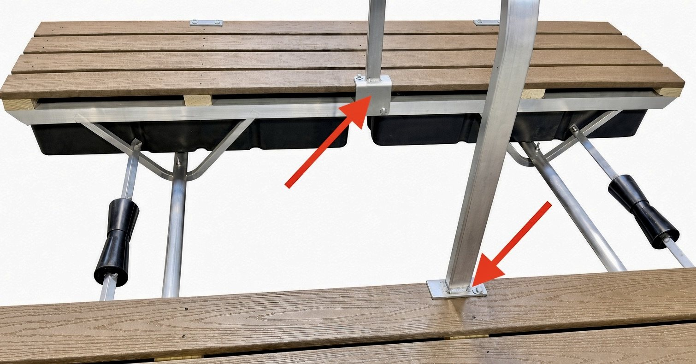
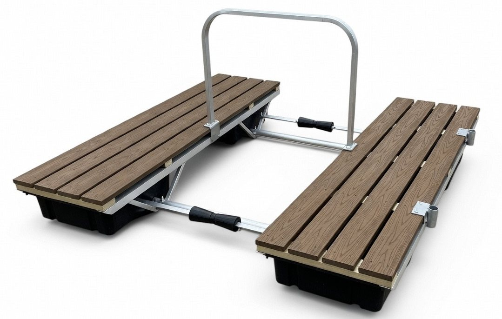

MR. LAUNCHER 2.0
MUELLE PARA KAYAK
MANUAL DE INSTALACIÓN

MANUAL DE INSTALACIÓN
¡GRACIAS por comprar un muelle de lanzamiento de kayak Mr. Launcher 2.0!
Lea todas las instrucciones y vea los videos de ayuda antes de comenzar.
Videos de ayuda: youtube.com/@amdocks
Más imágenes e información: www.AmericanMuscleDocks.com
Este muelle de lanzamiento residencial está diseñado para ofrecer una forma accesible de entrar y salir de su kayak con mayor facilidad.
Este muelle de lanzamiento de kayak residencial no está diseñado para usarse como muelle flotante y debe ser utilizado por una sola persona a la vez. Siga las instrucciones para una instalación correcta y segura.


Engrase las roscas de los pernos de acero inoxidable de 3/8 x 4” al instalar los soportes de tubo.
Fije los soportes de tubo de aluminio
PÁGINA 5 2Fije los estabilizadores de tubo cuadrado
PÁGINA 6 3Instale la barra de agarre de aluminio
PÁGINA 7 4Monte los receptores Kandy Kane
PÁGINA 8
** Los orificios pretaladrados ya están en la V de aluminio, en la posición en la que la mayoría de los kayaks se asientan mejor sobre los rodillos de caucho. Algunos fondos de kayak son distintos y pueden requerir taladrar orificios nuevos para subir o bajar este soporte. La resistencia correcta debe ser suficiente para permitirle entrar y salir del kayak sin que este se mueva demasiado. Fijamos los orificios a la altura más común, adecuada para la mayoría de los fondos de kayak, de modo que los rodillos sujeten el kayak sin que se aleje flotando cuando está atracado.

Coloque la barra de agarre de aluminio justo en el centro del lado interior de las dos plataformas flotantes. La barra de agarre tiene orificios pretaladrados arriba y abajo (hágalos coincidir con los orificios pretaladrados de las plataformas). Si los orificios no coinciden exactamente, quizá deba aflojar algunos de los pernos de los soportes de tubo de aluminio o de los estabilizadores de tubo cuadrado que instaló.

Monte los receptores de tubo en su sección de muelle flotante: colóquelos a horcajadas sobre el travesaño exterior de 2x4” para que ese travesaño ocupe el hueco entre la tarima y el marco de aluminio, o utilice un bloque de 2x4” para rellenar el hueco debajo del soporte.
RECEPTORES DE TUBO - Use (2) pernos de carruaje de 3/8 x 4” por montaje, desde arriba hacia abajo. * Taladre estos orificios con una ligera inclinación hacia el exterior del muelle (no se preocupe si toca la pestaña de montaje del flotador). Use (1) perno de carruaje de 3/8 x 1 ¼” en la cara lateral de cada montaje.
SOPORTES DE CUBIERTA - Marque dónde desea taladrar y fije los soportes de cubierta Kandy Kane a su otra estructura permanente, cada uno con (4) pernos de carruaje de 1/2 x 3”. Monte la placa lo más cerca posible del borde de la tarima para que quede un espacio entre el tubo y la tarima (ese espacio garantiza que los soportes de tubo del muelle de lanzamiento puedan desplazarse por el tubo sin atascarse contra su muelle).




Toque o haga clic en cualquier imagen para abrirla a pantalla completa. El plano de dimensiones se lee mejor ampliado.